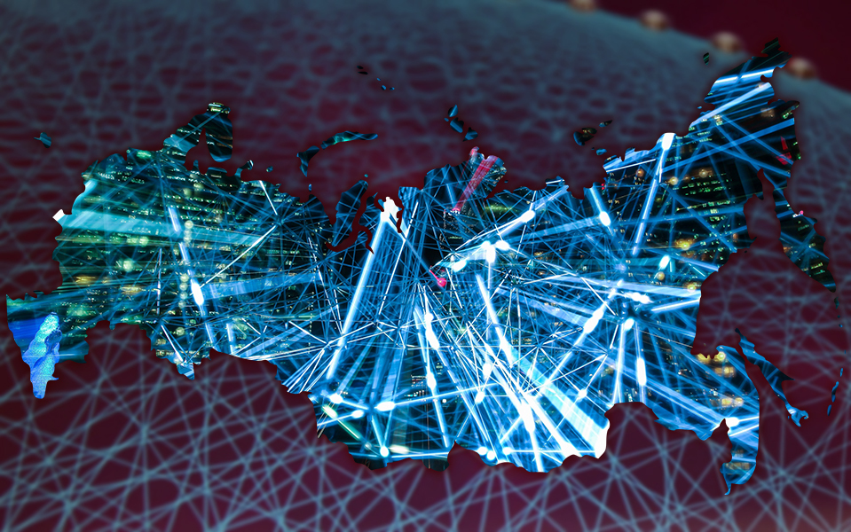

Технологическое развитие как фактор преодоления актуальных проблем мировой экономики
Данная научная работа посвящена роли технологического развития в преодолении актуальных проблем мировой экономики.

Данная научная работа посвящена роли технологического развития в преодолении актуальных проблем мировой экономики.
Современная мировая экономика сталкивается с множеством сложных проблем, которые существенно влияют на ее развитие и устойчивость. Эти проблемы включают в себя: неравенство доходов, истощение ресурсов, изменение климата, геополитические конфликты. Одновременно технологическое развитие продолжает формировать различные аспекты человеческой жизни, включая экономические системы и процессы. Понимание контекста этих актуальных проблем и роли технологий является важным для разработки эффективных стратегий по их решению.
Мировая экономика претерпела значительные преобразования в последние десятилетия. Глобализация, характеризующаяся интеграцией экономик, увеличением торговли и пересечением границ в области инвестиций, открыла возможности, но также принесла и проблемы. Хотя глобализация способствовала экономическому росту и доступу к новым рынкам, она также способствовала социальному неравенству и вытеснению рабочих мест в определенных регионах. Более того, быстрое развитие технологий, особенно в области информационных технологий, автоматизации и искусственного интеллекта, нарушило традиционные отрасли и модели занятости [1].
Помимо экономических проблем, мир также сталкивается с острыми экологическими проблемами. Изменение климата, обусловленное деятельностью человека и индустриализацией, привело к повышению глобальной температуры, экстремальным погодным явлениям и нарушениям экосистем. Истощение природных ресурсов, таких как ископаемые топлива и минералы, угрожает долгосрочной устойчивости. Необходимость перехода на возобновляемые источники энергии и принятие устойчивых практик становится все более срочной [2].
Более того, геополитические напряжения и конфликты, включая торговые споры и территориальные противоречия, создают неопределенности и представляют риски для глобальной экономической стабильности. Политические факторы, такие как изменения в руководстве и политике, могут значительно влиять на международную торговлю и инвестиционные потоки. Эти динамики подчеркивают взаимосвязь мировой экономики и необходимость эффективного управления и сотрудничества между странами [3-4].
Цель данной научной статьи заключается в изучении текущих проблем мировой экономики и их взаимосвязи с технологическим развитием. Работа направлена на исследование различий между истинными факторами развития и простыми улучшениями существующих достижений.
Понимание и решение глобальных вызовов являются ключевыми для формирования устойчивого и процветающего будущего. Значимость данной темы может быть обоснована следующими аспектами:
1. Проблемы, с которыми сталкивается мировая экономика, такие как неравенство доходов, истощение ресурсов и изменение климата, имеют далеко идущие последствия, выходящие за рамки национальных границ. Эти проблемы затрагивают экономики, общества и экосистемы всего мира. Исследование и поиск решений для этих вызовов являются важными для глобальной стабильности, справедливого роста и экологической устойчивости [5].
2. Мировая экономика постоянно преобразуется под воздействием технологических достижений. Определение и приоритизация истинных факторов развития являются необходимыми условиями для стимулирования экономического роста и конкурентоспособности. Изучение текущих проблем и их связи с технологическим развитием позволяет политикам, предпринимателям и исследователям получить понимание потенциальных областей инноваций [6].
3. Технологические прорывы нарушают традиционные отрасли, переформировывают рынки труда и революционизируют производственные процессы. Понимание влияния и последствий новых технологий, таких как искусственный интеллект, автоматизация и цифровизация, критически важно для политиков, предпринимателей и работников. Исследование вызовов и возможностей, представленных этими технологиями, может служить основой для стратегического принятия решений и облегчения успешной адаптации, перехода в условиях значительных изменений [7].
4. Текущие проблемы мировой экономики, такие как бедность, деградация окружающей среды и социальное неравенство, тесно связаны с «Цели устойчивого развития Организации Объединенных Наций» (ЦУР). Достижение этих целей требует инновационных подходов, включая применение технологий, для решения взаимосвязанных вызовов, с которыми сталкиваются страны и общества. Исследование взаимосвязи мировой экономики, технологического развития и ЦУР необходимо для разработки эффективных стратегий и политик, направленных на стимулирование устойчивого развития в масштабах всего мира [8].
Значимость изучения текущих проблем мировой экономики и технологического развития заключается в их глобальном влиянии, необходимости устойчивого экономического роста, трансформационной силе технологий, соответствии ЦУР и руководстве для политики и управления.
В контексте мировой экономики и технологического развития выявление факторов развития является важным для понимания сил, стимулирующих прогресс и формирующих будущее. Факторы развития — это ключевые факторы или катализаторы, которые имеют потенциал для приведения к существенным прогрессивным изменениям и трансформации. Далее представлено несколько подходов и соображений для выявления факторов развития.
Революционные технологические прорывы часто выступают в качестве ведущих факторов развития. Эти прорывы вводят совершенно новые концепции, методологии или изобретения, которые разрушают существующие отрасли и создают новые возможности. Примеры: появление искусственного интеллекта и решений в области возобновляемой энергии. Путем распознавания и изучения этих прорывов мы можем получить представление о их потенциале для стимулирования экономического роста и общественной трансформации [9].
Анализ возникающих рыночных тенденций может помочь выявить факторы развития. Наблюдение за изменениями в потребительских запросах, рыночной динамике и новых отраслях может выявить области с значительным потенциалом роста. Например, развитие сферы совместного потребления, увеличение внимания к устойчивости и расширение электронной коммерции являются признаками факторов развития, формирующих мировую экономику. Путем отслеживания и понимания этих тенденций мы можем обнаружить возможности для инноваций и инвестиций [10].
Государственная политика и регулирующие инициативы играют важную роль в стимулировании развития. Политики, стимулирующие исследования и разработку, поощрение предпринимательства и поддержку инноваций, часто выступают в качестве факторов развития. Кроме того, регулирование, способствующее конкуренции, защите интеллектуальной собственности и поощрению устойчивых практик, может оказывать влияние на направление технологического развития. Анализ политики позволяет выявить области, в которых правительства активно способствуют прогрессу, и определить их потенциальное влияние.
Факторы развития часто связаны с решением глобальных вызовов и удовлетворением общественных потребностей. Например, необходимость в чистых энергетических решениях, устойчивом транспорте и доступной медицине может способствовать технологическим прорывам в этих областях. Распознавание срочных глобальных вызовов и выявление технологий и инноваций, предлагающих решения, позволяет определить факторы развития, имеющие потенциал оказать значительное влияние [11].
Сотрудничество и обмен знаниями между исследователями, экспертами отрасли и политиками могут помочь выявить факторы развития. Вовлечение в междисциплинарные исследования, участие в конференциях и семинарах, создание партнерств между академической средой и промышленностью способствуют обмену идеями и информацией. Эти сотрудничества могут раскрыть возникающие технологии, инновационные подходы и факторы развития, которые могут не быть немедленно очевидными [12].
Применение этих подходов и соображений позволяет эффективно выявлять факторы развития, которые имеют потенциал формировать мировую экономику и технологический ландшафт. Признание и понимание этих факторов является необходимым для принятия обоснованных решений, определения приоритетов в использовании ресурсов и использования их трансформационной силы для решения глобальных проблем, и содействия устойчивому развитию.
Исследование ситуации в мире является ценным инструментом для изучения и понимания текущих проблем мировой экономики и технологического развития. Анализ реальных сценариев и конкретных примеров позволяет получить представление о сложностях, вызовах и потенциальных решениях. Несколько примеров, которые раскрывают взаимосвязь между мировой экономикой и технологическим развитием:
1. Взлет электронной коммерции. Исследование быстрого роста платформ электронной коммерции, таких как Amazon и Alibaba, демонстрирует трансформационное воздействие технологий на мировую экономику. Оно показывает, как прогресс в области цифровой инфраструктуры, логистики и систем платежей способствовал расширению онлайн-ритейла, изменению потребительского поведения и дестабилизации традиционных «каменно-высотных» предприятий. Изучение этого примера помогает понять вызовы и возможности, связанные с цифровой экономикой, и важность технологических инноваций в стимулировании экономического роста [13].
2. Переход к возобновляемым источникам энергии. Исследование стран, таких как Германия и Дания, переходящих на возобновляемые источники энергии, предоставляет ценные сведения о вызовах и преимуществах использования устойчивых энергетических решений. Эти страны успешно внедрили политики, инвестировали в научно-исследовательскую деятельность и разработку, создали поддерживающие регуляторные рамки для содействия принятию возобновляемой энергии. Анализ этого примера помогает определить технологические прорывы, меры политики и экономические аспекты, необходимые для успешного перехода к энергии будущего [14].
3. Применение искусственного интеллекта в медицине. Анализ применения искусственного интеллекта (ИИ) в медицине демонстрирует потенциал технологий для революции в области медицинской диагностики, лечения и ухода за пациентами. Путем использования алгоритмов ИИ, машинного обучения и анализа больших данных, медицинские учреждения могут повысить точность диагностики, персонализировать лечение и улучшить общие результаты здравоохранения. Этот пример подчеркивает регуляторные проблемы и общественные последствия внедрения ИИ в систему здравоохранения [15].
4. Умные города, как шаг, опирающийся на технологии, может справиться с вызовами быстрой урбанизации, управления ресурсами и обеспечения устойчивости. Города, такие как Сингапур и Барселона, внедрили различные умные технологии, включая устройства IoT, анализ данных и интеллектуальную инфраструктуру для улучшения городских услуг, оптимизации распределения ресурсов и повышения качества жизни для жителей. Всё это предоставляет сведения о роли технологий в создании более интеллектуальных, эффективных и устойчивых городов [16].
5. Пример рынка гибкого труда, воплощенного в платформах, таких как Uber и Airbnb, исследует влияние технологий на паттерны занятости и рынок труда. Он демонстрирует преимущества и недостатки гибких форм трудовых отношений и роль технологических платформ в изменении традиционных отраслей [17].
Анализируя эти и другие примеры, можно получить более глубокое понимание сложных взаимоотношений между мировой экономикой и технологическим развитием.
Понимание текущих проблем мировой экономики и технологического развития имеет важные выводы для политики. Далее представлены ключевые выводы, вытекающих из анализа современных проблем.
1. Содействие инновационным экосистемам. Должны создаваться благоприятные условия, способствующие инновациям и технологическому развитию [18].
2. Улучшение цифровой инфраструктуры. Стоит обратить особое внимание на развитие надежной цифровой инфраструктуры, включая широкополосное подключение, центры обработки данных и меры кибербезопасности. Доступ к надежному и высокоскоростному интернету является ключевым фактором для обеспечения цифровой трансформации, развития электронной коммерции и поддержки роста таких новых технологий, как искусственный интеллект и интернет вещей [19].
3. Поддержка устойчивого развития. Нужно стремиться к балансу между экономическим ростом и экологической устойчивостью. Поощрение использования чистых и возобновляемых источников энергии, содействие практикам циркулярной экономики и внедрение регулирования, стимулирующего устойчивые деловые отношения, являются необходимыми условиями для снижения негативного воздействия экономической деятельности на окружающую среду.
4. Развитие цифровых навыков. Необходимо поддерживать и инвестировать образовательные программы, которые оснастят людей необходимыми цифровыми навыками и компетенциями. Это включает продвижение STEM-образования (наука, технологии, инженерия и математика), предоставление программ подготовки для переквалификации и повышения квалификации, а также обеспечение равного доступа к качественному образованию [20].
5. Содействие международному сотрудничеству. В связи с глобальным характером экономических и технологических вызовов необходимо отдавать приоритет международному сотрудничеству.
Мировая экономика и технологическое развитие сталкиваются с различными вызовами и возможностями в настоящую эпоху. В данной статье были изучены текущие проблемы и тенденции в этих областях, подчеркивая необходимость всестороннего понимания их взаимодействия. Рассмотрев различие между движущими силами развития и усовершенствованиями, выявив ключевые факторы технологического развития, были получены ценные выводы./p>
Очевидно, что технологии играют центральную роль в формировании мировой экономики и стимулировании прогресса. Технологические достижения имеют потенциал для проведения революции отраслей, повышения производительности и улучшения уровня жизни. Однако важно различать истинные движущие силы развития, способствующие трансформационным изменениям, и простые улучшения, которые строятся на основе уже существующих технологий.
Выявление движущих сил развития имеет важное значение для политиков, исследователей и бизнеса, чтобы стратегически распределить ресурсы и планировать будущее. Это позволяет сосредоточиться на областях, которые имеют потенциал принести существенный экономический рост, устойчивое развитие и социальные выгоды.
Изученные в этой статье примеры демонстрируют разнообразные применения технологий в различных секторах. Они показывают, как технологические инновации справляются с существующими глобальными вызовами, создают новые возможности и преобразуют отрасли. Эти примеры служат вдохновением и предоставляют ценные уроки для заинтересованных сторон, стремящихся использовать силу технологий для позитивных сценариев.
В заключение, мировая экономика и технологическое развитие тесно связаны между собой, понимание текущих проблем и возможностей является важным для принятия обоснованных решений. Путем распознавания движущих сил развития, эффективного использования технологий и реализации стратегических политических мер можно преодолеть сложности, осуществить потенциал технологий для блага обществ по всему миру.
1. Иванов П. И. Роль технологического развития в современной экономике. Москва: Издательство "Экономика", 2020. 150 с.
2. Смирнова А. Н. Актуальные проблемы мировой экономики и их влияние на развитие стран. Вестник экономической науки, 2018, т. 2, № 3, с. 45-56.
3. Петров В. С. Технологические инновации и их роль в решении экономических проблем. В сборнике: Инновации и экономическое развитие. Москва: Издательство "Наука", 2019, с. 78-89.
4. Сидорова Е. А. Влияние изменения климата на мировую экономику. Экономические проблемы современного мира, 2017, т. 5, № 2, с. 112-125.
5. Johannes M. Bauer. The Internet and income inequality: Socio-economic challenges in a hyperconnected society, Telecommunications Policy, Volume 42, Issue 4, 2018, Pages 333-343, ISSN 0308-5961, https://doi.org/10.1016/j.telpol.2017.05.009.
6. Maria M. Feliciano-Cestero. Is digital transformation threatened? A systematic literature review of the factors influencing firms’ digital transformation and internationalization, Journal of Business Research, Volume 157, 2023, 113546, ISSN 0148-2963, https://doi.org/10.1016/j.jbusres.2022.113546.
7. Marina Dabic. Future of digital work: Challenges for sustainable human resources management, Journal of Innovation & Knowledge, Volume 8, Issue 2, 2023, 100353, ISSN 2444-569X, https://doi.org/10.1016/j.jik.2023.100353.
8. Pierre-Alexandre Balland, Tom Broekel, Dario Diodato, Elisa Giuliani, Ricardo Hausmann, Neave O'Clery, David Rigby, Reprint of The new paradigm of economic complexity, Research Policy, Volume 51, Issue 8, 2022, 104568, ISSN 0048-7333, https://doi.org/10.1016/j.respol.2022.104568.
9. Margaret A. Goralski. Artificial intelligence and poverty alleviation: Emerging innovations and their implications for management education and sustainable development, The International Journal of Management Education, Volume 20, Issue 3, 2022, 100662, ISSN 1472-8117, https://doi.org/10.1016/j.ijme.2022.100662.
10. Jacopo Ballerini. How commitment and platform adoption drive the e-commerce performance of SMEs: A mixed-method inquiry into e-commerce affordances, International Journal of Information Management, 2023, 102649, ISSN 0268-4012, https://doi.org/10.1016/j.ijinfomgt.2023.102649.
11. Zaheer Allam. Future (post-COVID) digital, smart and sustainable cities in the wake of 6G: Digital twins, immersive realities and new urban economies, Land Use Policy, Volume 101, 2021, 105201, ISSN 0264-8377, https://doi.org/10.1016/j.landusepol.2020.105201.
12. Nabila Abid. Cities trajectories in the digital era: Exploring the impact of technological advancement and institutional quality on environmental and social sustainability, Journal of Cleaner Production, Volume 377, 2022, 134378, ISSN 0959-6526, https://doi.org/10.1016/j.jclepro.2022.134378.
13. Roland Schmuck. An overview of innovation strategies and the case of Alibaba, Procedia Manufacturing, Volume 51, 2020, Pages 1259-1266, ISSN 2351-9789, https://doi.org/10.1016/j.promfg.2020.10.176.
14. Matthias Müller-Mienack, Chapter 27 - German Renewable Energy Sources Pathway in the New Century, Editor(s): Lawrence E. Jones, Renewable Energy Integration (Second Edition), Academic Press, 2017, Pages 373-381, ISBN 9780128095928, https://doi.org/10.1016/B978-0-12-809592-8.00027-5.
15. Md Mobashir Hasan Shandhi. AI in medicine: Where are we now and where are we going?, Cell Reports Medicine, Volume 3, Issue 12, 2022, 100861, ISSN 2666-3791, https://doi.org/10.1016/j.xcrm.2022.100861.
16. Yue Deng, Wanyi Jiang. Economic resilience assessment and policy interaction of coal resource oriented cities for the low carbon economy based on AI, Resources Policy, Volume 82, 2023, 103522, ISSN 0301-4207, https://doi.org/10.1016/j.resourpol.2023.103522.
17. Veronica Macário de Oliveira. Collaborative consumption as sustainable consumption: The effects of Uber's platform in the context of Brazilian cities, Cleaner and Responsible Consumption, Volume 5, 2022, 100064, ISSN 2666-7843, https://doi.org/10.1016/j.clrc.2022.100064.
18. Lin Liang, Yan Li. How does government support promote digital economy development in China? The mediating role of regional innovation ecosystem resilience, Technological Forecasting and Social Change, Volume 188, 2023, 122328, ISSN 0040-1625, https://doi.org/10.1016/j.techfore.2023.122328.
19. Clare M. Patterson. Learning from cyber security incidents: A systematic review and future research agenda, Computers & Security, 2023, 103309, ISSN 0167-4048, https://doi.org/10.1016/j.cose.2023.103309.
20. Aidan Michael McCarthy. Digital transformation in education: Critical components for leaders of system change, Social Sciences & Humanities Open, Volume 8, Issue 1, 2023, 100479, ISSN 2590-2911, https://doi.org/10.1016/j.ssaho.2023.100479.
Email для связи: lazorindanya@yandex.ru с пометкой "Статья ТР"